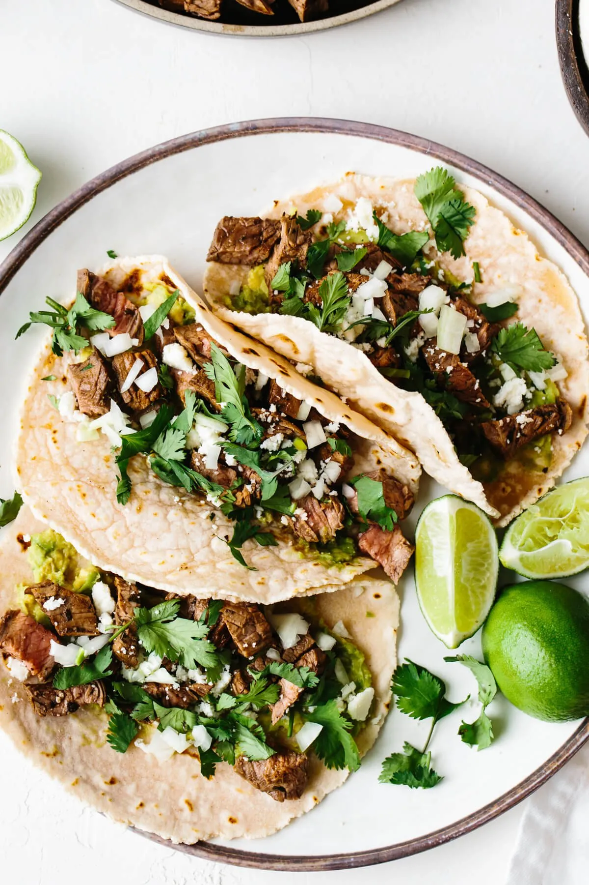

Carne Asada Tacos

Description
Picture a sizzling plate of carne asada, where tender, marinated steak is perfectly grilled with a smoky char and bursting with flavor.
This simple dish is served on warm corn tortillas, topped with fresh cilantro, diced onions, and a squeeze of lime, creating a vibrant and delicious taco experience.
Ingredients
- 1 pound flank or skirt steak
- 4 cloves garlic, minced
- Juice of 2 limes
- 2 tablespoons olive oil
- Salt and pepper to taste
- Corn tortillas
- Fresh cilantro, chopped
- Diced onion
- Lime wedges
Steps
- Marinate Steak: In a bowl, combine minced garlic, lime juice, olive oil, salt, and pepper. Coat the steak in the marinade and let it sit for at least 30 minutes.
- Grill Steak: Preheat your grill or a skillet over medium-high heat. Grill the steak for about 4-5 minutes per side for medium-rare, or to your preferred doneness.
- Rest and Slice: Let the steak rest for a few minutes, then slice it thinly against the grain.
- Assemble Tacos: Warm the corn tortillas, fill with slices of carne asada, and top with fresh cilantro, diced onion, and a squeeze of lime.
- Serve: Enjoy the tacos immediately while they’re hot and fresh.